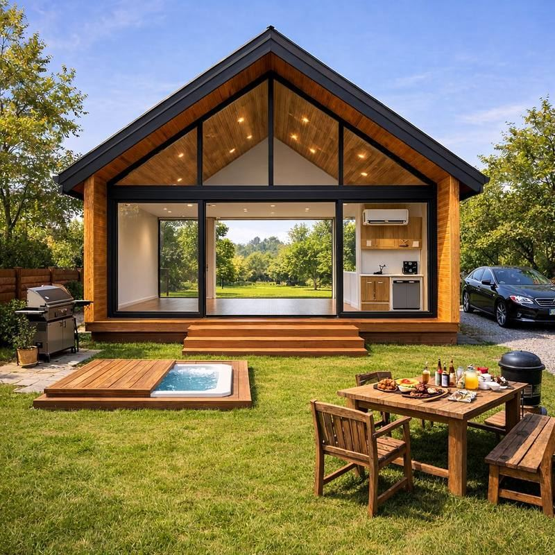
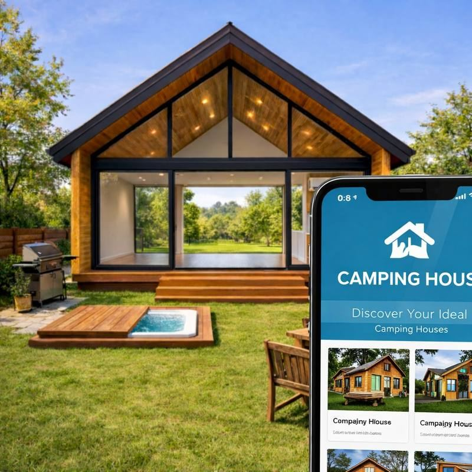
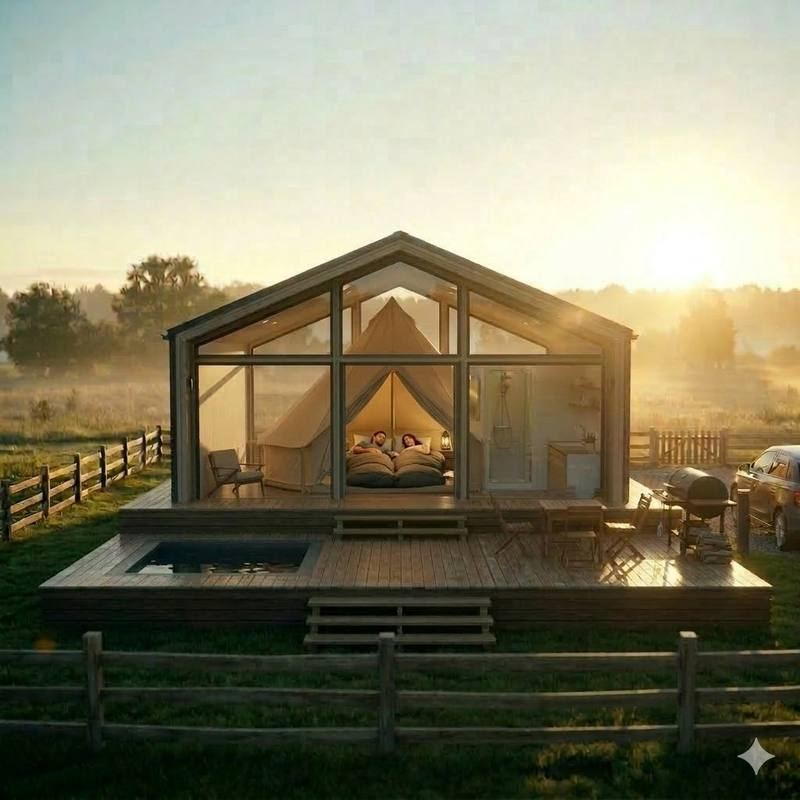
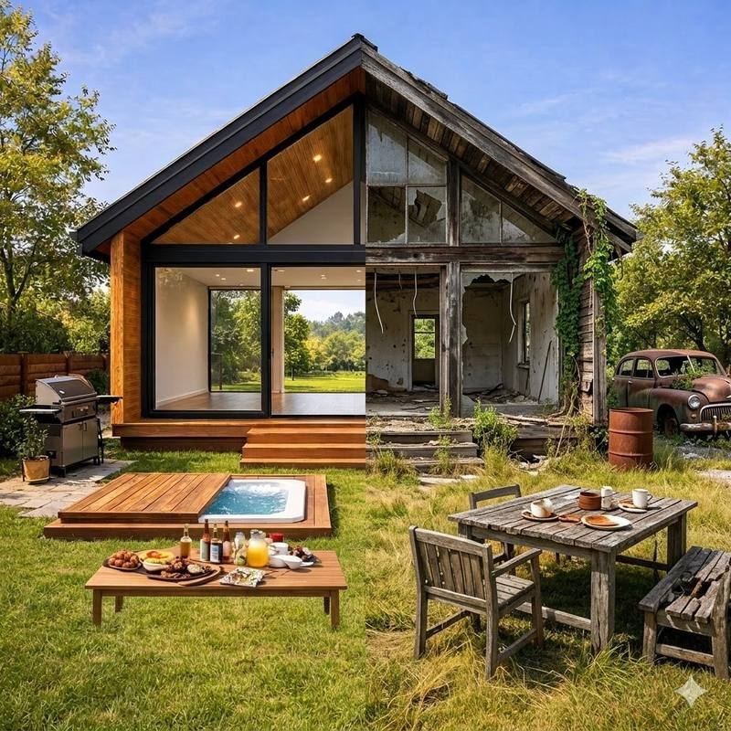

🏡 통창·자쿠지·바베큐를 갖춘 외부 전경

📱 예약·주문·결제가 가능한 전용 앱

⛺ 오각형 통창 구조 + 글램핑 텐트 인테리어

🔁 Before & After — 빈집의 재탄생
CHALLENGE 해결하고자 한 과제
지방 빈집과 폐가를 캠핑×하우스 결합형 숙소로 재탄생시켜, 지방 소멸 위기 지역의 빈집 문제를 해결하고 관광객을 유치하는 신사업 기획입니다. "새롭게 탈바꿈한 시골 빈집에서, 늘 사용하던 텐트와 침낭만 챙겨오세요" — 모든 예약·주문·결제는 앱 하나로 해결합니다.
SOLUTION 기존 캠핑의 한계 → 카핑하우스의 해법
기존 캠핑, 이런 점이 아쉬웠다면
- 비싸고 복잡하고 번거로운 장비 준비
- 여름엔 더워서, 겨울엔 추워서 포기했던 캠핑
- 장비를 싣고 내리고, 설치하고 철수하고 보관까지
- 먹거리까지 챙기면 차량 가득
- 비싼 대여료에 주말마다 매진되는 캠핑장
- 늦은 체크인, 이른 체크아웃
- 다닥다닥 붙은 캠핑장, 사라지는 여유와 낭만
- 코로나 이후 위축된 캠핑 수요
카핑하우스라면
- 최소한의 주방·욕실·화장실만 (침실·침구는 없음)
- 앞뒤로 트인 통창 + 높은 층고의 오각형 구조
- 추울 땐 통창 닫고 텐트·침낭에서 취침
- 더울 땐 에어컨 켜고 간이침대에서 취침
- 넉넉한 바베큐 장비 + 야외 자쿠지
- 여름엔 마당에 에어풀장 설치 가능
- 마당 주차 가능 — 캠핑 장비·식자재 적재 용이
PLAN 추진 방안 — 4단계
1
빈집 임대·매입
지방 소멸 위기 지역의 유휴 빈집을 확보합니다.
2
최소 예산 재건축
높은 층고, 최소한의 주방·욕실·화장실에 자쿠지·벽난로·바베큐 등을 더합니다.
3
맞춤 디자인
입지·지형·주변 환경의 특수성을 반영한 구조로 설계합니다.
4
앱 플랫폼 구축
예약·주문·결제를 앱으로 일원화하고 데이터를 수집·분석합니다.
IMPACT 기대 효과
🏠빈집·폐가 문제 해결
🏕️캠핑 관광객 유치 (2023년 기준 캠핑 인구 약 700만 명)
🛏️일반 관광객 숙박시설 연계 — 숙박 인프라 부족 지역 보완
🏪주변 상권 활성화
🔄추후 다른 시설로 전환이 쉬운 가변적 구조
📲예약부터 결제까지 앱으로 일원화
AX 앱(플랫폼)으로 운영하면 좋은 점
관련 데이터를 수집·분석해 수요를 예측하고, 지역 상권 활성화에 기여하는 운영 전략을 설계했습니다.
📊데이터 — 이용자 데이터 확보·분석으로 수요 예측
💳지역화폐 결제 — 인근 상권과 연계해 지역 경제 활성화
🗺️관광지 추천 — 일정·날씨를 고려한 주변 관광지 추천
📣재방문 마케팅 — 기존 이용자 대상 맞춤 마케팅
🛁IoT 제어 — 자쿠지·풀장·에어컨·전기를 앱으로 제어 (부가 유료 서비스)